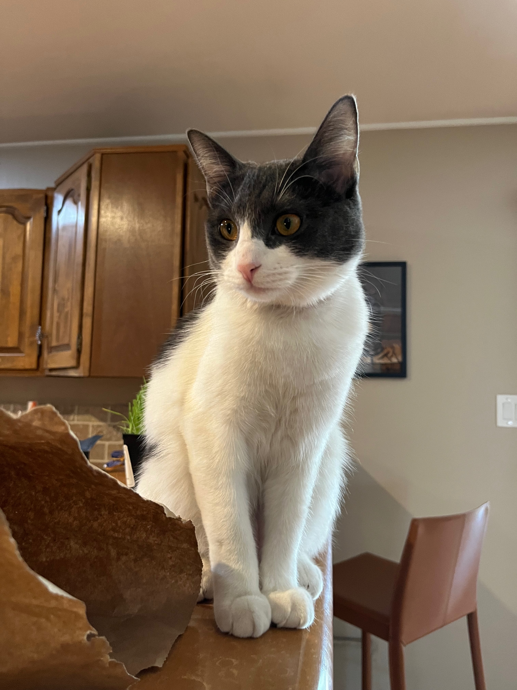

I got into collecting vinyls over the last two or so years and have been obsessed with it ever since. I currently own 17 of them, 5 of which are full artists discographies (them belonging to Harry Styles and Melanie Martinez). I plan on obtaining more as the years go on, but for now this is what I have.
I wouldn't call myself a professional photographer like my older brother is, but I like to indulge in the activity. I don't have a fancy camera to take pictures with, so i use my phone instead. It proves to be extremely useful in capturing any moment in that instant. The only exception to this is the petrified cascade picture. That one was taken with the help of a friend's drone. These are just a couple of the photos I have taken. I know they aren't exactly professional in quality, but they're mine and I like them.

This image will take you to the official iFixit website. Here you wil find a repair guide on how to fix common issues that occur to the Lenovo IdeaPad 330-15IGM. This is a repair guide that I contributed to during my BPC170-270 class in the fall semester of 2022, along with 2 of my other classmates. This guide allowed me to put in practice the repair knownledge that we learned in class and that i had previously had in a real life scenario that can help others as well. I consider this one of my biggest accomplishments when it comes to recorded data on my ability to fix things, which is someething i enjoy doing and have enjoyed for years.